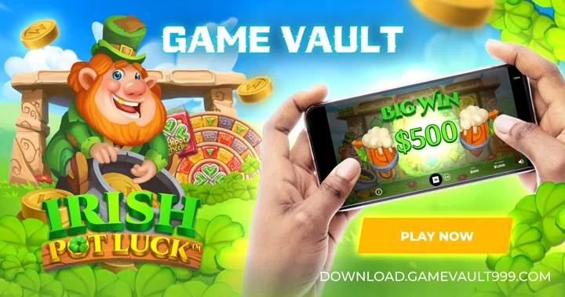

Gold Rush Gus and the City of Riches
Gus is easy to pick out. He wears a broad-brimmed hat and holds a golden object up to the light. The large lettering reads Gold Rush Gus, with “and the City of Riches” underneath. If you remember the character better than the title, those are the words to look for.
Irish Pot Luck and Sahara Riches
Irish Pot Luck puts a red-bearded leprechaun over the title, with green fields behind him. Sahara Riches takes a different approach. Its tall poster puts the words “Cash Collect” beneath the title and shows an Egyptian queen beside the game screen. Those smaller words help distinguish it from other Egyptian-themed games.
Spot the details
The phone shown in the Irish Pot Luck and Gold Rush Gus artwork gives a glimpse of the reels. For a broader look at the platform, Game Vault’s Featured Games page also includes fish games. The three images here are a closer look at its reel-game artwork.

